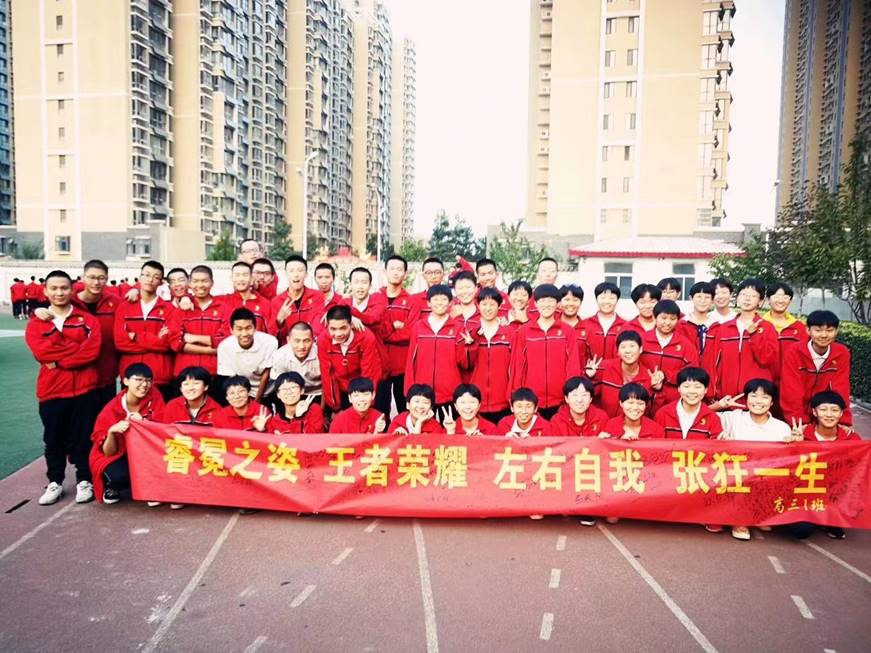
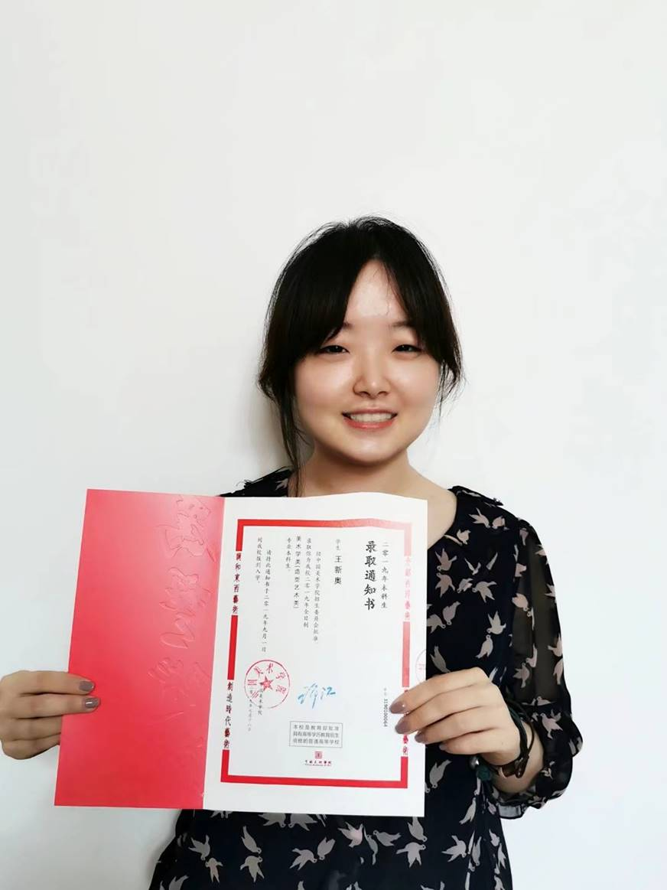
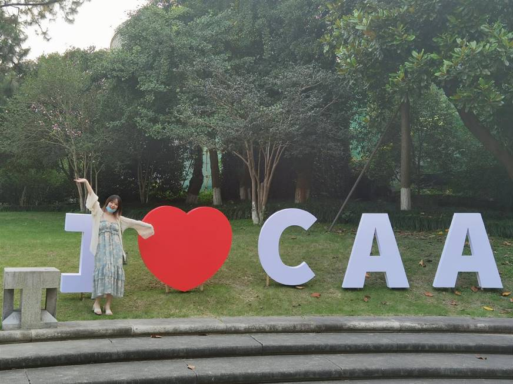

2021/6/28 17:10:14
进入国美已经将近两年，然而高中的记忆却依旧鲜明。如今再回忆起我的母校三十五中，想到的是图书馆的阶梯和两旁的雕像、是专业教室里成排陈列的画架、是走廊里各个班级富有特色的墙绘。而让我最难忘的，是老师们对我的引领。
没有目标的行动像是在黑夜中摸索前行，而有了目标就仿佛是黑夜中的明灯，让我们不再迷路。艺术之路漫长而艰辛，而高中只是漫漫长路上的起跑线。美术生面对的难题不仅是专业和文化的平衡，更要随时追问自己心中所想所思。

还记得在高一的第二学期，专业课老师让同学们围坐成一圈，大家一起在教室里听老师对于各个院校的分析。那晚天气很晴朗，透过教室的窗户能够看到明亮的月亮。我和同学并肩坐在一起，她低头削着铅笔，我则对老师的话听了个云里雾里。高中才开始学习美术的我，相比班上很多通过了美术中考入学的同学已经落后了很多，而对于艺术学院、美院更是知之甚少。八大美院是哪些？综合类大学的校考又有哪些专业？这一切与我而言都仿佛很陌生，而在未来的高三，我们即将面对省内联考、各校的校考。如何选择适合自己的专业院校，合理
安排校考时间，这些问题对身为美术生的我们至关重要。正当我在心里琢磨各个院校的特色时，老师突然问我：“以后想去哪里？”
冷不丁的提问让我毫无防备，全班的目光同时射向我，而我只觉得脸直发烫。高中时的我，文化虽然稍好一些，但是在班里的同学中，我的专业课也只是平均水平。但是我隐约感觉到，为了应付场面而胡乱应对绝不可行。此时此刻的回答会无意识地形成自我暗示，如果没有一定的挑战性会使自己丧失奋战的动力，而目标太高又会显得自不量力，那我又如何去决定一个目标院校呢？
我认为自己一向是“大事讲原则，小事讲风格”的人，但在此刻，身为青春期女生的感性冒出了头来。我想起自己向往南方的初衷，湿润、温暖。又想到了戴望舒笔下的雨巷，想到了幽雅的江南水乡。选择哪所学校作为目标呢？我追寻的是正统严肃的艺术，或是现代离奇的艺术呢？鬼使神差地，我回答了“中国美术学院”。是啊，那所蔡元培先生创办的坐落在西子湖畔的艺术学府，吸收了杭州千年的文化沉淀，又有西湖水的滋养，经历了近十年的战乱后又依旧不改初心，大声喊出“为艺术战”的口号。在说出口的瞬间，我有点后悔自己的自不量力，又为自己的选择暗自庆幸。我终于决定了自己的目标，或许现在看来还很遥远，或许还会被同学们觉得又空又大。但至少对于自己而言，这个目标是动力的永动机。只要坚持自己的选择，就有动力支持自己不懈努力。
在接下来的课程中，老师开始有意识地调整我的方向。速写基础好，就继续挑战更高难度的主题。色彩相对弱，就恶补色彩知识。当我开始打退堂鼓的时候，老师会在办公室里给我看国美的留校作品，然后语重心长地教导我，讲现在遇到的难题，讲未来前进的方向，最后告诉我不要辜负过去的努力。
再后来，班主任张老师也知道了我的国美大目标。面对比起老师更像朋友的班主任，我站在办公桌旁，觉得更不好意思。结果张老师也笑了，是十分飒爽的笑容，也是我能准确读懂的笑容。“国美不挺好的，正好你也不适应北方的雾霾天，还要加油啊”。初中时因为哮喘而离开了北方的故乡，独自去南方读完了初中。高中归来时仍是无法适应北方的空气，我的班主任老师因此对我格外照顾。高二时正遇流感季，呼吸道脆弱的我不幸中招，每次感冒发烧都带来严重的并发症，因此总是请假在家休息。这使我在学校的课程进行得格外艰难。班主任张老师会整理好学校的资料与试卷，定期提醒我回学校带走资料。张老师负责语文授课，即使是在放学后，也会牺牲自己的休息时间在微信上指导我。其他科目的授课老师也对我关爱有加。负责英语授课的龚老师、教授数学的张老师…现在回忆起来，我依然十分感谢我的老师们。正是因为有负责任的老师们，我才能够在断断续续出勤的情况下，依然不落文化课的课程进度。
人在注意力高度集中时会忘记时间的流动，三年只占一个人在校时间的五分之一不到，但却是最为重要的三年。高中生活在紧绷的神经下转瞬即逝，却在名为人生的书上留下浓墨重彩的一页。我依旧怀念在三十五中度过的每一个晚自习，怀念东方未明时的每一次晨跑，怀念同学们围成环状一起屏息学习的每一次范画课。我庆幸自己选择了学习美术，让我得以追寻自己自幼时就深埋于心的梦想。我更为自己进入了三十五中学而感到荣幸，是三十五中让我遇到了我的同学老师们，是老师们的谆谆教诲和同学们的相互激励，成就了我勇敢追梦的翅膀。

白驹过隙，时间匆匆流去。再回首，感谢高中三年所给予我不可磨灭的回忆，感谢遇到的所有人，也感谢过去拼命努力的我自己。凡是过往，皆成序章。如今的我已经踏上了新的征程，我将不辜负自己，不辜负一直以来支持我的母校与老师，在全新的艺术道路上奋勇直前，展翅飞翔。

我在国美等着你们！
王新奥
2021年6月21日
现就读于中国美术学院
 微信公众号
网页手机版
微信公众号
网页手机版

版权所有@石家庄市第三十五中学（石家庄美术职业学校）| 地址：石家庄市明珠路18号 电话：0311-87894108 0311-87031067 | 冀ICP备 16023227号
学校邮箱: sjzmszyxx@126.com 校长信箱：sjzmzshang@126.com